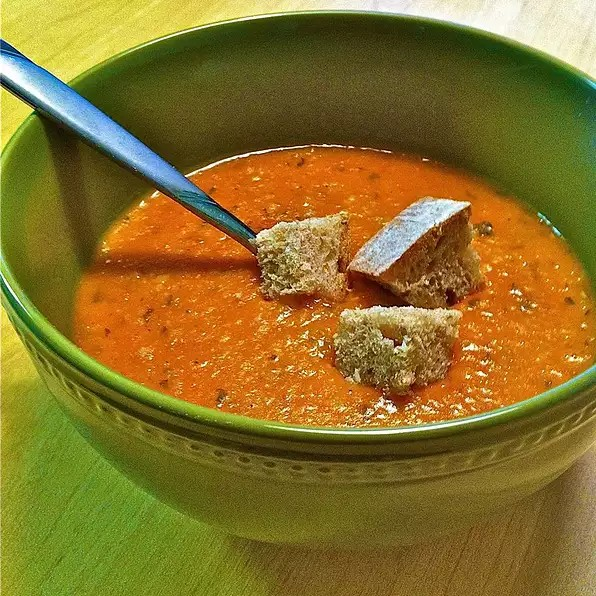

Turkish red lentil soup topped with bread crust
Description
This soup is divine and much like you will get at any authentic Turkish restaurant. It has dynamic flavors and a lovely mild heat. I make a big batch and eat it for lunch with crusty bread and salad the entire week. Optional: Serve with additional mint and lemon wedges.
Ingredients
2 tablespoons olive oil
½ onion, diced
1 clove garlic, minced
¼ cup diced tomatoes, drained
5 cups chicken stock
½ cup red lentils
¼ cup fine bulgur
¼ cup rice
2 tablespoons tomato paste
1 teaspoon paprika
½ teaspoon cayenne pepper (Optional)
1 tablespoon dried mint
salt and ground black pepper to taste
Steps
Heat the olive oil in a large pot over high heat.
Cook and stir the onion in the hot oil until it begins to soften, about 2 minutes.
Stir the garlic into the onion and cook another 2 minutes.
Add the diced tomatoes to the onion mixture.
Continue to cook and stir another 10 minutes.
Pour in the chicken stock, red lentils, bulgur, rice, tomato paste, paprika, cayenne pepper, and mint to the tomato mixture.
Season with salt and black pepper.
Bring the soup to a boil, reduce heat to medium-low.
Cook at a simmer until the the lentils and rice are cooked through, about 30 minutes.
Pour the soup into a blender to no more than half full.
Firmly hold the lid in place and carefully start the blender, using a few quick pulses to get the soup moving before leaving it on to puree.
Puree in batches until smooth.
Pour into your serving dish.
You can instead use a stick blender and puree the soup in cooking pot.